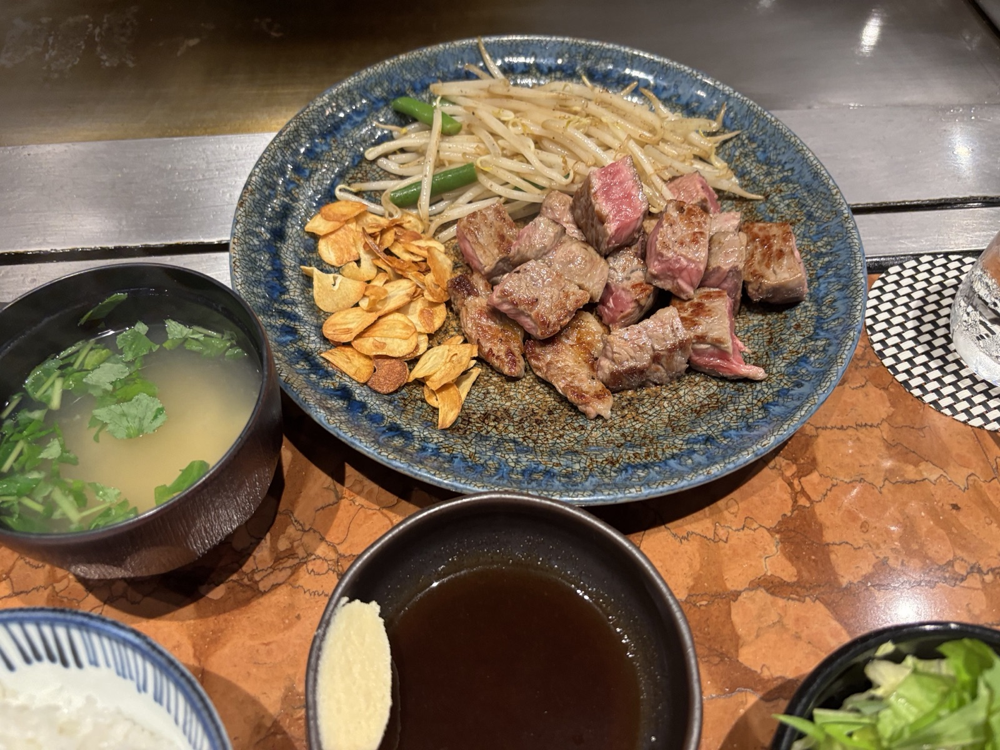
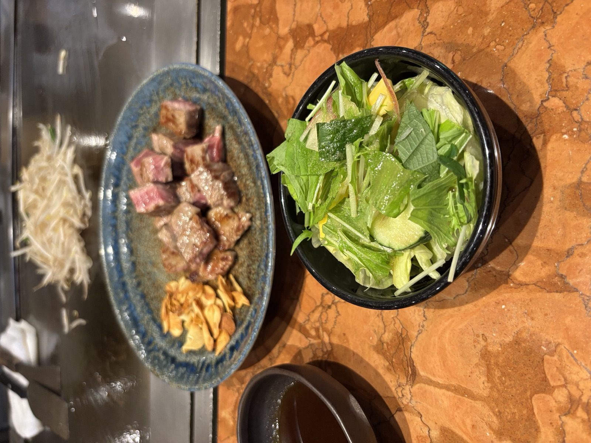
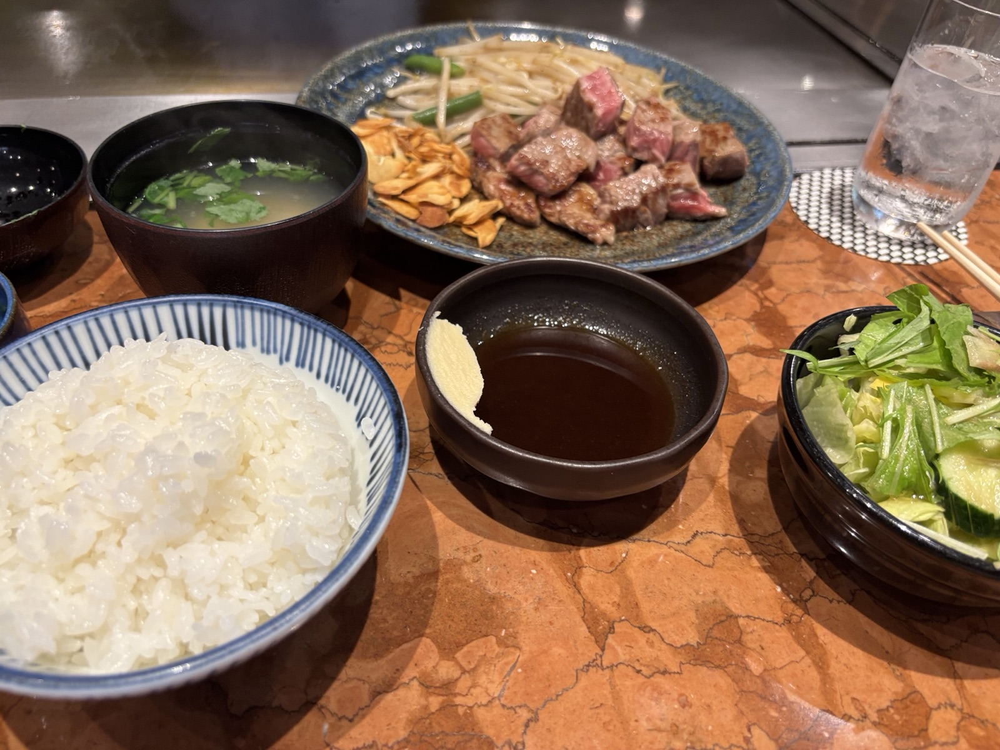
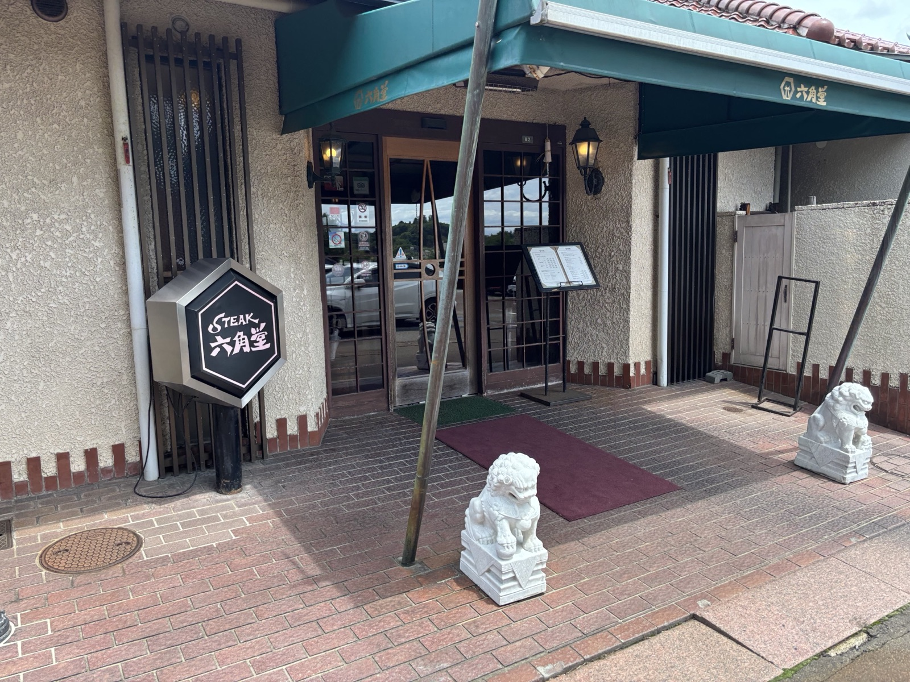
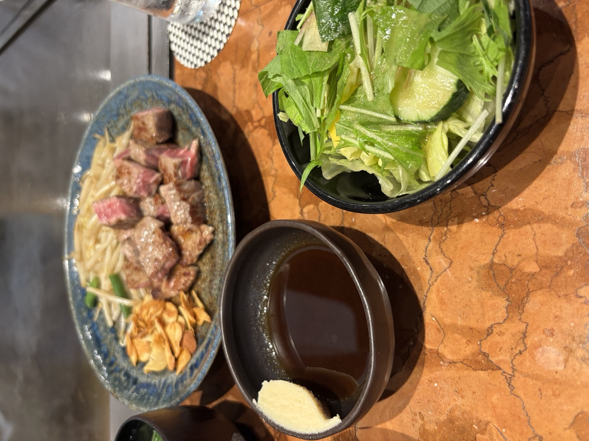
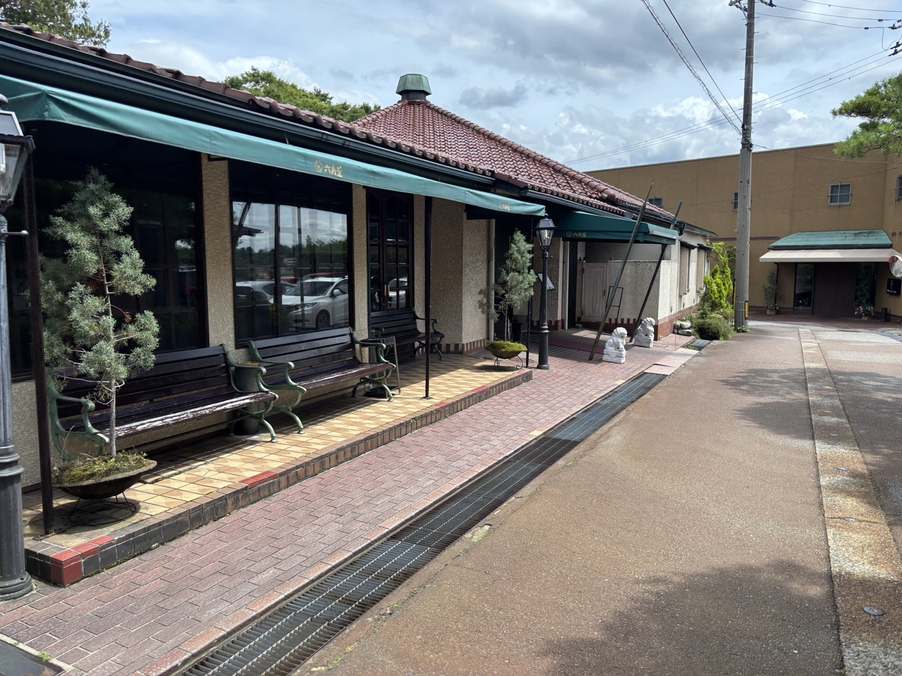

GALLERY

六角堂の風景PHOTO






目の前の鉄板で、一枚を焼き上げる。
石川県金沢市 観音町
金沢・観音町の松並木沿いに佇む「ステーキハウス 六角堂」。六角形の屋根と緑の庇、玄関を守る一対の狛犬が、訪れる人を静かに迎えます。
カウンター越しの鉄板で、輸入牛から能登牛・特選黒毛和牛まで、その日のお肉を目の前で焼き上げるのが六角堂の流儀。香ばしいガーリックチップ、シャキッとしたもやし、たっぷりのサラダとご飯を添えて、一枚のステーキをゆっくりと味わえます。
カウンターの鉄板で焼き上げる、できたてのステーキ。
輸入牛・国産牛・黒毛和牛・能登牛。部位とグラム数も選べます。
カリッと揚げたガーリックチップともやしが、旨みを引き立てる。





